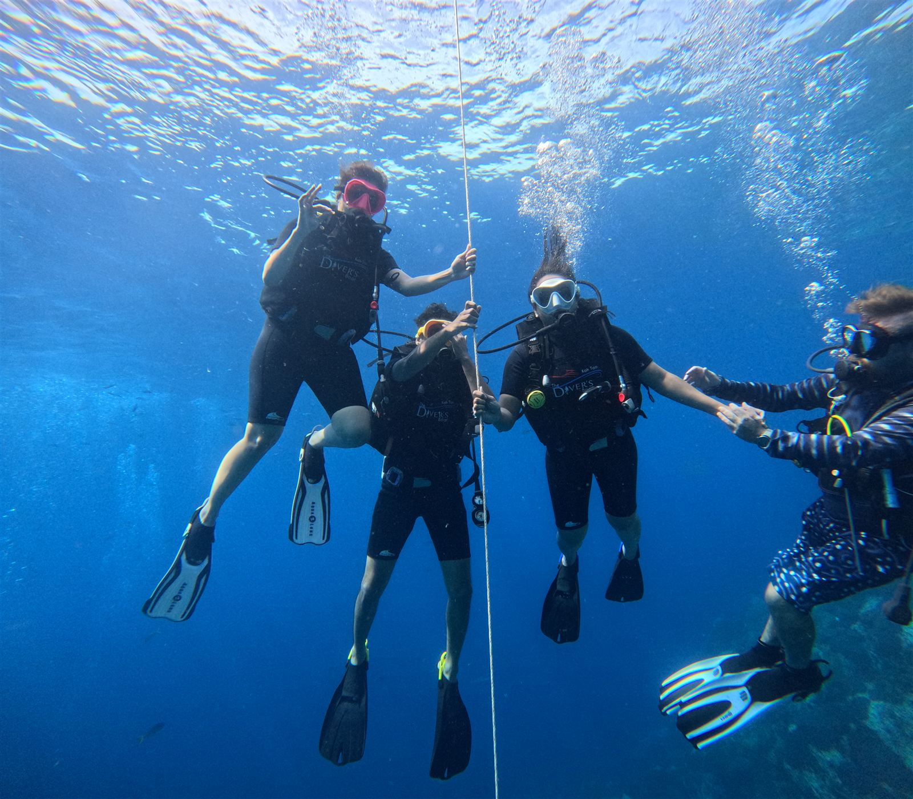
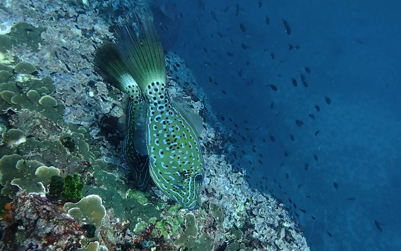
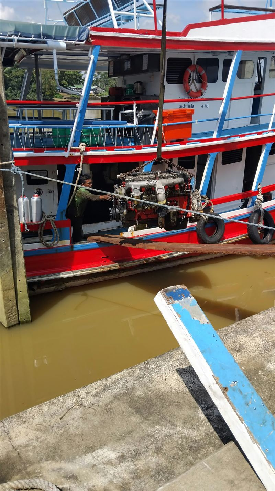
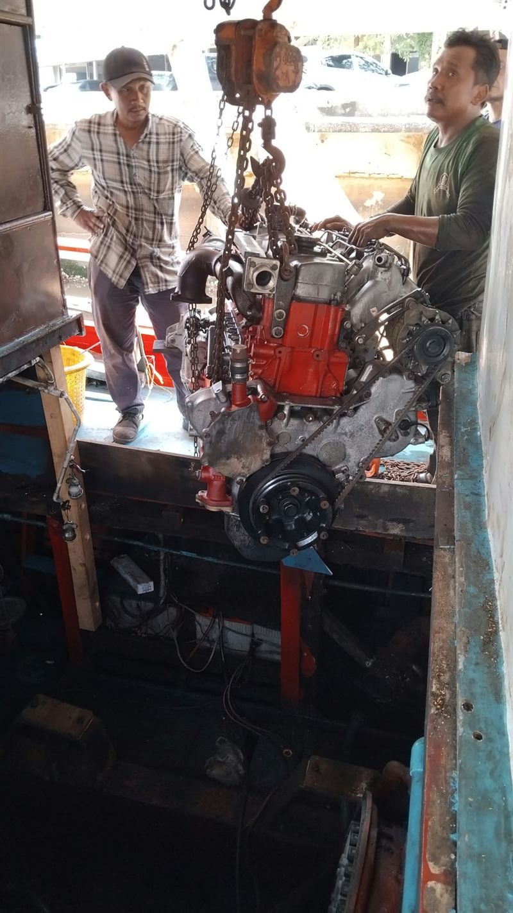
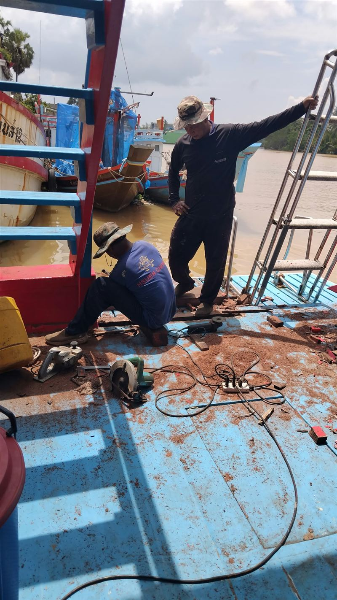
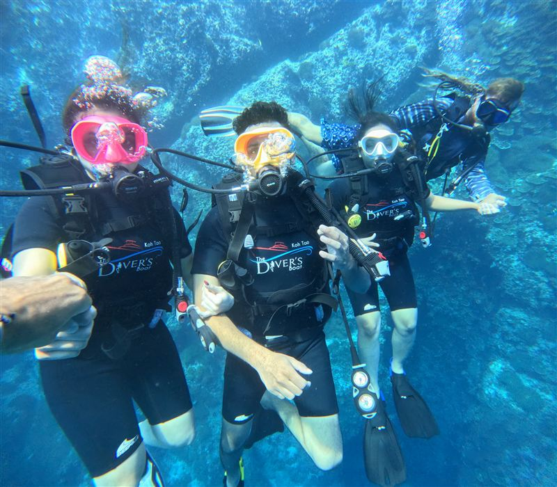
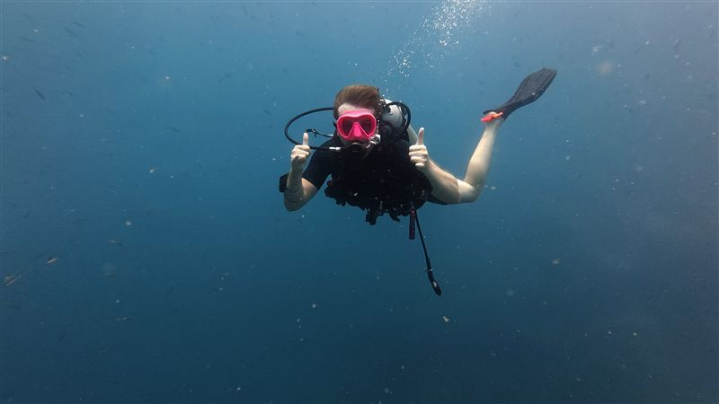
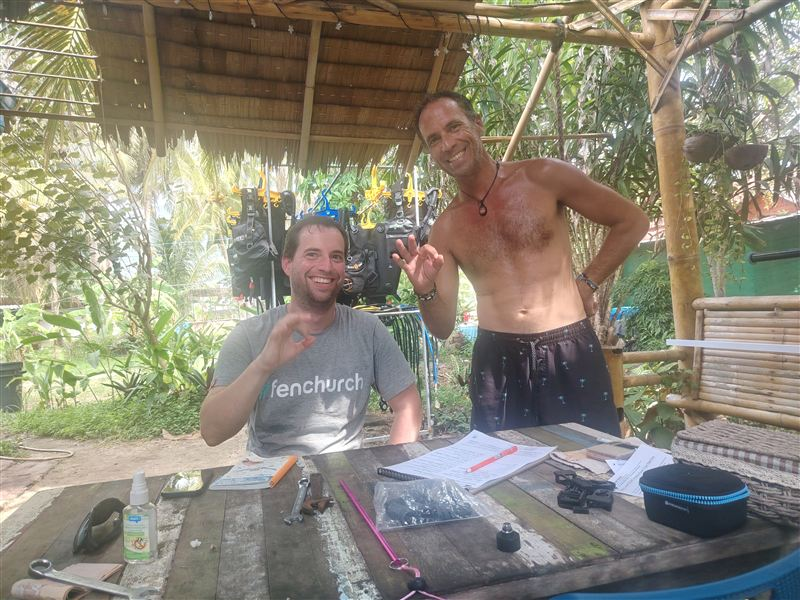
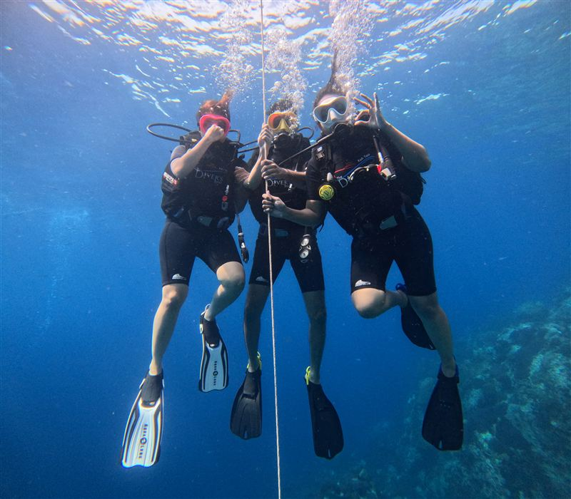
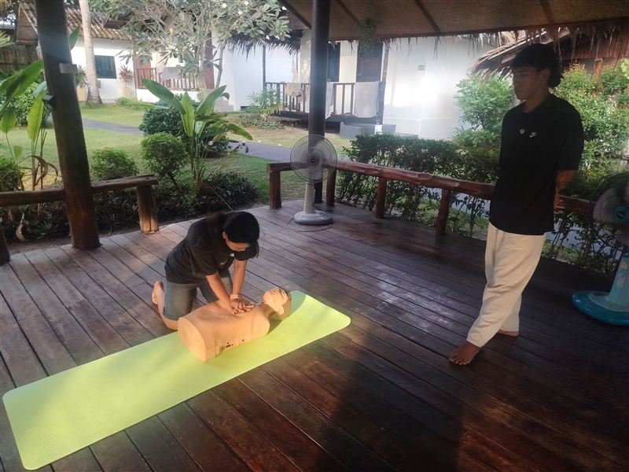

Inicio / Blog / Crónica de buceo, octubre de 2026
Crónica de buceo:
octubre de 2026
Un septiembre movido, un octubre en calma y con agua clara, una pareja de peces lima que no se va de Sail Rock y nuestro barco en el astillero estrenando motor. Así han sido las últimas semanas.
Por Boris Collado, instructor principal ·
El mar
Del mar de fondo
al agua en calma
- Septiembre
- Más mar de fondo
- Octubre
- En calma y clara
Han sido unas semanas un poco atípicas. Septiembre llegó con más mar de fondo del que esperábamos, así que algunos días el trayecto de ida se movió más de lo normal.
Octubre le ha dado la vuelta. Llueve un poco, pero la superficie del mar está plana y la visibilidad bajo el agua es incluso mejor que en septiembre. Si estás en la isla ahora, es un muy buen momento para meterse en el agua.

Pez lima garabateado · Sail Rock
En Sail Rock
Una pareja de
peces lima
El último tiburón ballena fue hace dos semanas. Desde entonces, una pareja preciosa de peces lima anda rondando la roca casi en cada inmersión.
Los tiburones ballena vienen y van, y nadie puede prometer uno. Pero una pareja de peces lima que aparece inmersión tras inmersión es una pequeña alegría en sí misma. También hemos añadido dos especies nuevas a nuestra guía de vida marina: el pez mariposa de Weibel y el pez ángel de anillo azul.
El barco
Motor nuevo
para el Rungworawan
La temporada baja es cuando cuidamos el barco. El Rungworawan, cuyo nombre une tres palabras tailandesas, amanecer, color y resplandeciente, está en un astillero de Chumphon para una puesta a punto completa:
- Motor nuevo
- Pintura nueva
- Protecciones de seguridad en la parte de atrás del barco
- Una cámara para que el capitán pueda ver cómo entran los buceadores al agua sin salir de la cabina
- Accesorios nuevos en cubierta, entre ellos un soporte para las botellas



Volverá en noviembre. Pero noviembre es época de monzón, así que no lo usaremos hasta Navidad, cuando la gente empieza a volver a la isla. Mientras tanto buceamos desde el barco de otra compañía. Las salidas a Sail Rock siguen, con un cambio: este barco sale a las 8:00 en lugar de a nuestras 9:30 de siempre.
En el agua
Temporada baja,
buena compañía
Hay poca gente, pero no está vacío. Estas semanas hemos tenido bautismos para quienes se metían en el agua por primera vez, a Ben con sus cursos de Deep y Nitrox, a Alexander terminando su Advanced Open Water, y un curso de primeros auxilios con práctica de RCP. Gracias a todos por dejarnos compartir vuestras fotos.





¿Vienes
a la isla?
Mándanos tus fechas y te diremos con sinceridad cómo ha estado el mar y qué se está viendo en Sail Rock.